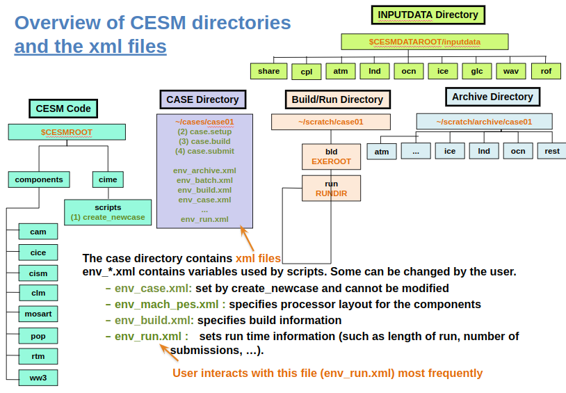
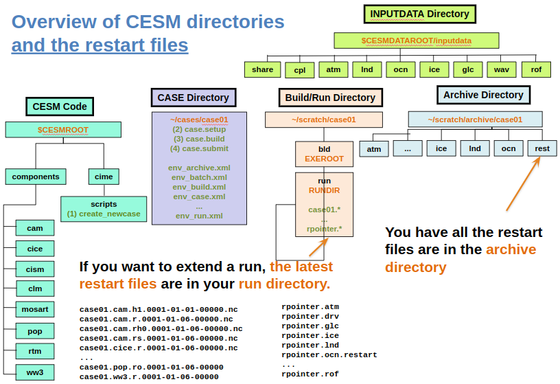

Extending a simulation
Contents
Extending a simulation#
Introduction to XML variables#
In this section, you will learn how to resubmit a run and how to change the run length. Much of the control of the running of your CESM simulation is controlled by “XML” files. XML stands for Extensible Markup Language. The files that end in .xml in your case directory contain many variables that control the CESM simulation. Figure 1 illustrates the various XML files that exist in the CESM case directory.

Figure 1: CESM structure and the xml files
#
The most commonly used XML variables are located in env_run.xml. This file contains variables that are used to control the characteristics of your simulations, such as the run length or whether it is a start up run or the continuation of a run. These variables can be changed using the xmlchange command, which has the advantage over editing this file directly, that the change is propagated to all the necessary locations.
Controlling the length of a submission using the XML variables#
The length of a simulation that is performed within one submission is set in the env_run.xml file with the variables STOP_N and STOP_OPTION. STOP_OPTION controls the units in which you are specifying the length of simulation and STOP_N is the length in those units.
By default, the model is set to run for 5 days with
STOP_N = 5
STOP_OPTION = ndays
You can query the default settings of these variables with the command xmlquery e.g.,
./xmlquery STOP_OPTION,STOP_N
will print out the values of STOP_OPTION and STOP_N.
You can change the values of these parameters using the xmlchange command. For example, suppose you want to increase the run length from 5 days to 1 month, you can use:
./xmlchange STOP_OPTION=nmonths,STOP_N=1
The variables STOP_OPTION and STOP_N control the length of one run segment. Typically supercomputers have limits on how long you can run at once e.g., some may have a wallclock limit of 12 hours in real time, meaning that you can only run continuously for 12 hours. In that case, you would want to set STOP_OPTION and STOP_N to an appropriate length that can be completed within 12 hours of real time.
More information about the other variables in env_run.xml can be found at https://docs.cesm.ucar.edu/models/cesm2/settings/current/drv_input.html.
Restart files#
Once a run segment has completed, the model generates a series of “restart” files and “rpointer” files that are stored in the run directory. These files are also archives in the rest directory within the archive (Figure 2). The restart files contain all the information required for the model to keep on running from where it ended. The rpointer files tell the model which restart files to use.

Figure 2: CESM structure and the restart files
#
Continuing a simulation#
In most cases, the length of simulation that you can run within one submission will be shorter than what you actually want, so you will need to run many segments of length STOP_N.
The two variables that can be used to control the overall length of your simulation are CONTINUE_RUN and RESUBMIT. CONTINUE_RUN controls whether the simulation is continuing from a previous segment or not. When set to True, the simulation continues from a previous segment. RESUBMIT controls the number of resubmissions.
If you want to continue the previous simulation for another individual segment you can run the following from the case directory
./xmlchange CONTINUE_RUN=True
If you then submit your case again by running case.submit from your case directory, this will use the restart files that exist in your run directory to continue the run where it left off for another segment of length STOP_N.
If you want to continue the previous simulation for multiple segments than you can also set RESUBMIT to the number of times you would like to resubmit the simulation. This controls how many times you want to resubmit and run another segment of the simulation of length STOP_N. For example, if you were to set RESUBMIT=2 then when you submit the job to the queue it will first run one segment, then it will subsequently resubmit twice, running another length of STOP_N each time i.e., a total of three times STOP_N.
If you set RESUBMIT to a non-zero value when you make your first submission, it will automatically set CONTINUE_RUN=True after the first segment.
Other XML variables#
Continuing a simulation is one example of using XML variables to control your simulation. You can find a listing of all the available XML variables along with their description by running the following commands from your case directory
./xmlquery --listall --description
or for all the variables in a specific file e.g., env_run.xml
./xmlquery --listall --file env_run.xml --description
You can find the same information on the CESM website at